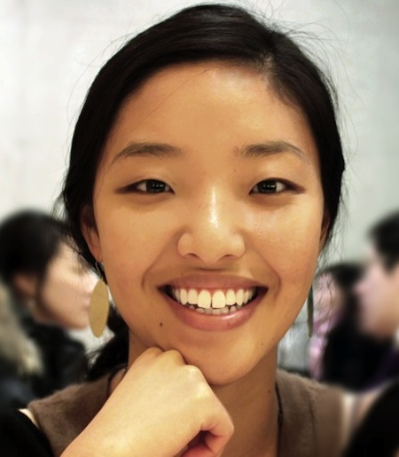

I am an outgoing and energetic young professional. My vision is to change the world for a better throght enterpreneurship. I found crypto currencies to be a great tool for this and I am on the quest to bring smarter Money to the people.
- Education
-
Chung-Ang University (Seoul, South Korea) 2005-2011
Bachelor of Social Work
- Skills
-
Office skills
Event Organization, Customer Support, Travel Coordination, Photography
Computer skills
Productivity software (Word, Excel, etc), Adobe Photoshop, Windows
- Experience
-
37CoinsAug 2013 - Present
Co-founder
- Bring Bitcoin to "the other 6 Billion"
World VisionMar 2012 - Jun 2013
officer, Online Marketing Team
- Created contents for social media
- Conducted fundraising projects on different websites
- Managed online advertisements (Search Optimization, Display Banner)
- Coordinated field trip for filming documentary
Selfemployed and Loving it ! Jan 2011 - Feb 2012
Traveller - Worldwide
- Travel South East Asia and Europe for creative research
- Interviwed social ventures and NGOs
World Vision Sep 2009 - Jan 2010
Part time staff, Marketing Team
- Coordinated charity events(Auction,Conference,Fair,Concert) with artists and celebrities
- Design project for cooperation donor
- Conducted major events to promote progress
World VisionJan 2009 - Aug 2009
Part time staff, Humanitarian & Emergency Affairs Team
- Grant Writing for Emergency Relief
- Translation for Fundraising Video and current project update
- News aggregation
The Korean Community ServicesJun 2008 - Aug 2008
Intern - New York, USA
- Conducted the survey about public health issues
- Grant Writing for breast cancer woman
- Organized educational workshop for non-smoke-city NY project
- Proposal writing to cooperation
- Achieved Human Behavior Research License
The Salvation ArmyAug 2007 - Feb 2008
Intern - McAllen, USA
- Participated in several fundraising project
- Conducted intake interviews to beneficiaries
- Supported Homeless Center and Charity Second-hand Store
- Certifications
-
Fundraising Course for NGO Staff
- Korea NGO Council for Overseas Cooperation
Social/Behavioral Reasearch Course (CITI)
- NYU School of Medicine/Medical Center
- Activities
-
Social Consulting Group 2010-Present
Social Designer School Oct 2009 - Dec 2009
Ideal Women Skill Development Multipurpose Centre
Jun 2007- Jul 2009
- Voluntary work for orphanage in Nepal
- Construction, wall painting & culture education
- Granted by Government Youth Commission
Im-ja elementary schoolJun 2007 – Jul 2007
- Voluntary work for Islands area elementary children
- Supported culture and educational activities
- Granted by LG electronic – Good neighbors and G market
MyoungRoon Nursery homeMar 2006 – Jun 2006
- Conducted individual and group counseling
- Supported Social relationship education and activities
- Granted by Gyonggi-do, Korea
- Traveling
-
Destination 20 countries, 70 cities, 550 days
Japan l USA l Mexico l Nepal l North Korea l Malaysia l Myanmar l Thailand l Cambodia l Germany l Netherlands l Hungary l Romania l Serbia l Slovenia l Turkey l Switzerland l Czech Republic l Italy 1 Rwanda 1 Guatemala
- References
-
Available on request